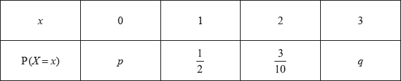
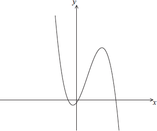
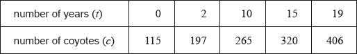
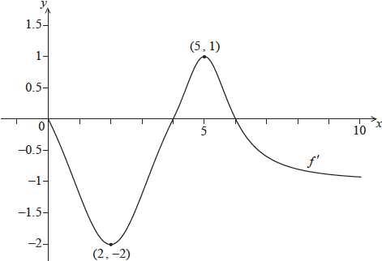
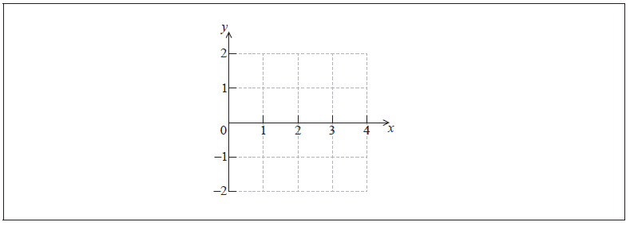
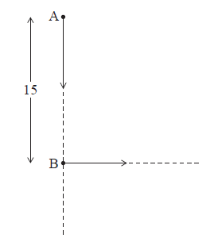
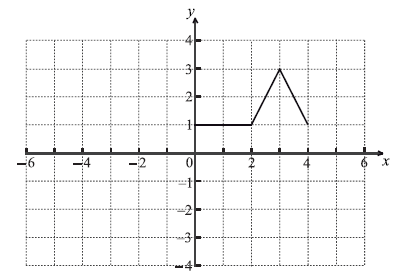
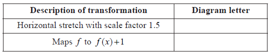
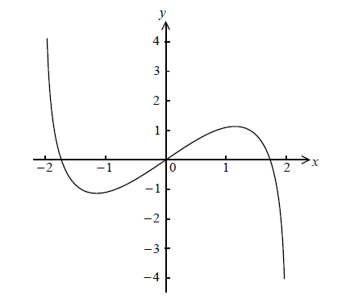
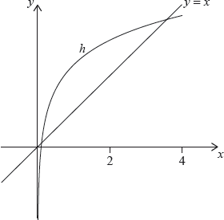

SL Paper 2
Let \(f(x) = 4{\tan ^2}x - 4\sin x\) , \( - \frac{\pi }{3} \le x \le \frac{\pi }{3}\) .
On the grid below, sketch the graph of \(y = f(x)\) .

Solve the equation \(f(x) = 1\) .
Consider \(f(x) = 2 - {x^2}\) , for \( - 2 \le x \le 2\) and \(g(x) = \sin {{\rm{e}}^x}\) , for \( - 2 \le x \le 2\) . The graph of f is given below.

On the diagram above, sketch the graph of g.
Solve \(f(x) = g(x)\) .
Write down the set of values of x such that \(f(x) > g(x)\) .
Let \(f(x) = 3x\) , \(g(x) = 2x - 5\) and \(h(x) = (f \circ g)(x)\) .
Find \(h(x)\) .
Find \({h^{ - 1}}(x)\) .
Let \(f(x) = x\ln (4 - {x^2})\) , for \( - 2 < x < 2\) . The graph of f is shown below.

The graph of f crosses the x-axis at \(x = a\) , \(x = 0\) and \(x = b\) .
Find the value of a and of b .
The graph of f has a maximum value when \(x = c\) .
Find the value of c .
The region under the graph of f from \(x = 0\) to \(x = c\) is rotated \({360^ \circ }\) about the x-axis. Find the volume of the solid formed.
Let R be the region enclosed by the curve, the x-axis and the line \(x = c\) , between \(x = a\) and \(x = c\) .
Find the area of R .
Let \(f(x) = {{\text{e}}^{x + 1}} + 2\), for \( - 4 \le x \le 1\).
On the following grid, sketch the graph of \(f\).

The graph of \(f\) is translated by the vector \(\left( {\begin{array}{*{20}{c}} 3 \\ { - 1} \end{array}} \right)\) to obtain the graph of a function \(g\).
Find an expression for \(g(x)\).
Let \(f(x) = a\cos (b(x - c))\) . The diagram below shows part of the graph of f , for \(0 \le x \le 10\) .

The graph has a local maximum at P(3, 5) , a local minimum at Q(7, − 5) , and crosses the x-axis at R.
Write down the value of
(i) \(a\) ;
(ii) \(c\) .
Find the value of b .
Find the x-coordinate of R.
The number of bacteria in two colonies, \(\rm{A}\) and \(\rm{B}\), starts increasing at the same time.
The number of bacteria in colony \(\rm{A}\) after \(t\) hours is modelled by the function \(\rm{A}(t) = 12{{\text{e}}^{0.4t}}\).
Find the number of bacteria in colony \({\text{A}}\) after four hours.
Find the number of bacteria in colony \({\text{A}}\) after four hours.
How long does it take for the number of bacteria in colony \({\text{A}}\) to reach \(400\)?
The number of bacteria in colony \({\text{B}}\) after \(t\) hours is modelled by the function \(B(t) = 24{{\text{e}}^{kt}}\).
After four hours, there are \(60\) bacteria in colony \({\text{B}}\). Find the value of \(k\).
The number of bacteria in colony \({\text{B}}\) after \(t\) hours is modelled by the function \(B(t) = 24{{\text{e}}^{kt}}\).
The number of bacteria in colony \({\text{A}}\) first exceeds the number of bacteria in colony \({\text{B}}\) after \(n\) hours, where \(n \in \mathbb{Z}\). Find the value of \(n\).
Let \(f(x) = {x^2} - 1\) and \(g(x) = {x^2} - 2\), for \(x \in \mathbb{R}\).
Show that \((f \circ g)(x) = {x^4} - 4{x^2} + 3\).
On the following grid, sketch the graph of \((f \circ g)(x)\), for \(0 \leqslant x \leqslant 2.25\).

The equation \((f \circ g)(x) = k\) has exactly two solutions, for \(0 \leqslant x \leqslant 2.25\). Find the possible values of \(k\).
The following diagram shows the graph of \(f(x) = {{\rm{e}}^{ - {x^2}}}\) .

The points A, B, C, D and E lie on the graph of f . Two of these are points of inflexion.
Identify the two points of inflexion.
(i) Find \(f'(x)\) .
(ii) Show that \(f''(x) = (4{x^2} - 2){{\rm{e}}^{ - {x^2}}}\) .
Find the x-coordinate of each point of inflexion.
Use the second derivative to show that one of these points is a point of inflexion.
Consider an infinite geometric sequence with \({u_1} = 40\) and \(r = \frac{1}{2}\) .
(i) Find \({u_4}\) .
(ii) Find the sum of the infinite sequence.
Consider an arithmetic sequence with n terms, with first term (\( - 36\)) and eighth term (\( - 8\)) .
(i) Find the common difference.
(ii) Show that \({S_n} = 2{n^2} - 38n\) .
The sum of the infinite geometric sequence is equal to twice the sum of the arithmetic sequence. Find n .
The following table shows a probability distribution for the random variable \(X\), where \({\text{E}}(X) = 1.2\).

A bag contains white and blue marbles, with at least three of each colour. Three marbles are drawn from the bag, without replacement. The number of blue marbles drawn is given by the random variable \(X\).
A game is played in which three marbles are drawn from the bag of ten marbles, without replacement. A player wins a prize if three white marbles are drawn.
Find \(q\).
Find \(p\).
Write down the probability of drawing three blue marbles.
Explain why the probability of drawing three white marbles is \(\frac{1}{6}\).
The bag contains a total of ten marbles of which \(w\) are white. Find \(w\).
Grant plays the game until he wins two prizes. Find the probability that he wins his second prize on his eighth attempt.
Let \(f\left( x \right) = \,\,{\text{sin}}\,\left( {{e^x}} \right)\) for 0 ≤ \(x\) ≤ 1.5. The following diagram shows the graph of \(f\).
![]()
Find the x-intercept of the graph of \(f\).
The region enclosed by the graph of \(f\), the y-axis and the x-axis is rotated 360° about the x-axis.
Find the volume of the solid formed.
The following diagram shows part of the graph of \(f(x) = - 2{x^3} + 5.1{x^2} + 3.6x - 0.4\).

Find the coordinates of the local minimum point.
The graph of \(f\) is translated to the graph of \(g\) by the vector \(\left( {\begin{array}{*{20}{c}} 0 \\ k \end{array}} \right)\). Find all values of \(k\) so that \(g(x) = 0\) has exactly one solution.
An environmental group records the numbers of coyotes and foxes in a wildlife reserve after \(t\) years, starting on 1 January 1995.
Let \(c\) be the number of coyotes in the reserve after \(t\) years. The following table shows the number of coyotes after \(t\) years.

The relationship between the variables can be modelled by the regression equation \(c = at + b\).
Find the value of \(a\) and of \(b\).
Use the regression equation to estimate the number of coyotes in the reserve when \(t = 7\).
Let \(f\) be the number of foxes in the reserve after \(t\) years. The number of foxes can be modelled by the equation \(f = \frac{{2000}}{{1 + 99{{\text{e}}^{ - kt}}}}\), where \(k\) is a constant.
Find the number of foxes in the reserve on 1 January 1995.
After five years, there were 64 foxes in the reserve. Find \(k\).
During which year were the number of coyotes the same as the number of foxes?
Let \(f'(x) = - 24{x^3} + 9{x^2} + 3x + 1\) .
There are two points of inflexion on the graph of f . Write down the x-coordinates of these points.
Let \(g(x) = f''(x)\) . Explain why the graph of g has no points of inflexion.
All lengths in this question are in metres.
Let \(f(x) = - 0.8{x^2} + 0.5\), for \( - 0.5 \leqslant x \leqslant 0.5\). Mark uses \(f(x)\) as a model to create a barrel. The region enclosed by the graph of \(f\), the \(x\)-axis, the line \(x = - 0.5\) and the line \(x = 0.5\) is rotated 360° about the \(x\)-axis. This is shown in the following diagram.

Use the model to find the volume of the barrel.
The empty barrel is being filled with water. The volume \(V{\text{ }}{{\text{m}}^3}\) of water in the barrel after \(t\) minutes is given by \(V = 0.8(1 - {{\text{e}}^{ - 0.1t}})\). How long will it take for the barrel to be half-full?
Consider a function \(f\), for \(0 \le x \le 10\). The following diagram shows the graph of \(f'\), the derivative of \(f\).

The graph of \(f'\) passes through \((2,{\text{ }} - 2)\) and \((5,{\text{ }}1)\), and has \(x\)-intercepts at \(0\), \(4\) and \(6\).
The graph of \(f\) has a local maximum point when \(x = p\). State the value of \(p\), and justify your answer.
Write down \(f'(2)\).
Let \(g(x) = \ln \left( {f(x)} \right)\) and \(f(2) = 3\).
Find \(g'(2)\).
Verify that \(\ln 3 + \int_2^a {g'(x){\text{d}}x = g(a)} \), where \(0 \le a \le 10\).
The following diagram shows the graph of \(g'\), the derivative of \(g\).

The shaded region \(A\) is enclosed by the curve, the \(x\)-axis and the line \(x = 2\), and has area \({\text{0.66 unit}}{{\text{s}}^{\text{2}}}\).
The shaded region \(B\) is enclosed by the curve, the \(x\)-axis and the line \(x = 5\), and has area \({\text{0.21 unit}}{{\text{s}}^{\text{2}}}\).
Find \(g(5)\).
Let \(f(x) = - 0.5{x^4} + 3{x^2} + 2x\). The following diagram shows part of the graph of \(f\).

There are \(x\)-intercepts at \(x = 0\) and at \(x = p\). There is a maximum at A where \(x = a\), and a point of inflexion at B where \(x = b\).
Find the value of \(p\).
Write down the coordinates of A.
Write down the rate of change of \(f\) at A.
Find the coordinates of B.
Find the the rate of change of \(f\) at B.
Let \(R\) be the region enclosed by the graph of \(f\) , the \(x\)-axis, the line \(x = b\) and the line \(x = a\). The region \(R\) is rotated 360° about the \(x\)-axis. Find the volume of the solid formed.
Let \(f(x) = x\cos (x - \sin x)\) , \(0 \le x \le 3\) .
Sketch the graph of f on the following set of axes.

The graph of f intersects the x-axis when \(x = a\) , \(a \ne 0\) . Write down the value of a.
The graph of f is revolved \(360^\circ \) about the x-axis from \(x = 0\) to \(x = a\) . Find the volume of the solid formed.
A population of rare birds, \({P_t}\), can be modelled by the equation \({P_t} = {P_0}{{\text{e}}^{kt}}\), where \({P_0}\) is the initial population, and \(t\) is measured in decades. After one decade, it is estimated that \(\frac{{{P_1}}}{{{P_0}}} = 0.9\).
(i) Find the value of \(k\).
(ii) Interpret the meaning of the value of \(k\).
Find the least number of whole years for which \(\frac{{{P_t}}}{{{P_0}}} < 0.75\).
The price of a used car depends partly on the distance it has travelled. The following table shows the distance and the price for seven cars on 1 January 2010.

The relationship between \(x\) and \(y\) can be modelled by the regression equation \(y = ax + b\).
On 1 January 2010, Lina buys a car which has travelled \(11\,000{\text{ km}}\).
The price of a car decreases by 5% each year.
Lina will sell her car when its price reaches \(10\,000\) dollars.
(i) Find the correlation coefficient.
(ii) Write down the value of \(a\) and of \(b\).
Use the regression equation to estimate the price of Lina’s car, giving your answer to the nearest 100 dollars.
Calculate the price of Lina’s car after 6 years.
Find the year when Lina sells her car.
Let \(f(x) = \frac{{2x - 6}}{{1 - x}}\), for \(x \ne 1\).
For the graph of \(f\)
(i) find the \(x\)-intercept;
(ii) write down the equation of the vertical asymptote;
(iii) find the equation of the horizontal asymptote.
Find \(\mathop {\lim }\limits_{x \to \infty } f(x)\).
The number of bacteria, n , in a dish, after t minutes is given by \(n = 800{{\rm{e}}^{0.13t}}\) .
Find the value of n when \(t = 0\) .
Find the rate at which n is increasing when \(t = 15\) .
Let \(f(x) = {x^3} - 2x - 4\) . The following diagram shows part of the curve of f .

The curve crosses the x-axis at the point P.
Write down the x-coordinate of P.
Write down the gradient of the curve at P.
Find the equation of the normal to the curve at P, giving your equation in the form \(y = ax + b\) .
Consider the following circle with centre O and radius r .

The points P, R and Q are on the circumference, \({\rm{P}}\widehat {\rm{O}}{\rm{Q}} = 2\theta \) , for \(0 < \theta < \frac{\pi }{2}\) .
Use the cosine rule to show that \({\rm{PQ}} = 2r\sin \theta \) .
Let l be the length of the arc PRQ .
Given that \(1.3{\rm{PQ}} - l = 0\) , find the value of \(\theta \) .
Consider the function \(f(\theta ) = 2.6\sin \theta - 2\theta \) , for \(0 < \theta < \frac{\pi }{2}\) .
(i) Sketch the graph of f .
(ii) Write down the root of \(f(\theta ) = 0\) .
Use the graph of f to find the values of \(\theta \) for which \(l < 1.3{\rm{PQ}}\) .
Let \(f(x) = x\cos x\) , for \(0 \le x \le 6\) .
Find \(f'(x)\) .
On the grid below, sketch the graph of \(y = f'(x)\) .

The quadratic equation \(k{x^2} + (k - 3)x + 1 = 0\) has two equal real roots.
Find the possible values of k.
Write down the values of k for which \({x^2} + (k - 3)x + k = 0\) has two equal real roots.
Let \(g(x) = \frac{1}{2}x\sin x\) , for \(0 \le x \le 4\) .
Sketch the graph of g on the following set of axes.

Hence find the value of x for which \(g(x) = - 1\) .
Let \(f(x) = (x - 1)(x - 4)\).
Find the \(x\)-intercepts of the graph of \(f\).
The region enclosed by the graph of \(f\) and the \(x\)-axis is rotated \(360^\circ\) about the \(x\)-axis.
Find the volume of the solid formed.
Let \(f(x) = 5\cos \frac{\pi }{4}x\) and \(g(x) = - 0.5{x^2} + 5x - 8\) for \(0 \le x \le 9\) .
On the same diagram, sketch the graphs of f and g .
Consider the graph of \(f\) . Write down
(i) the x-intercept that lies between \(x = 0\) and \(x = 3\) ;
(ii) the period;
(iii) the amplitude.
Consider the graph of g . Write down
(i) the two x-intercepts;
(ii) the equation of the axis of symmetry.
Let R be the region enclosed by the graphs of f and g . Find the area of R.
The following diagram shows two ships A and B. At noon, ship A was 15 km due north of ship B. Ship A was moving south at 15 km h–1 and ship B was moving east at 11 km h–1.

Find the distance between the ships
(i) at 13:00;
(ii) at 14:00.
Let \(s(t)\) be the distance between the ships t hours after noon, for \(0 \le t \le 4\) .
Show that \(s(t) = \sqrt {346{t^2} - 450t + 225} \) .
Sketch the graph of \(s(t)\) .
Due to poor weather, the captain of ship A can only see another ship if they are less than 8 km apart. Explain why the captain cannot see ship B between noon and 16:00.
Let \(f(x) = \frac{1}{{x - 1}} + 2\), for \(x > 1\).
Let \(g(x) = a{e^{ - x}} + b\), for \(x \geqslant 1\). The graphs of \(f\) and \(g\) have the same horizontal asymptote.
Write down the equation of the horizontal asymptote of the graph of \(f\).
Find \(f'(x)\).
Write down the value of \(b\).
Given that \(g'(1) = - e\), find the value of \(a\).
There is a value of \(x\), for \(1 < x < 4\), for which the graphs of \(f\) and \(g\) have the same gradient. Find this gradient.
Let \(f(t) = 2{t^2} + 7\) , where \(t > 0\) . The function v is obtained when the graph of f is transformed by
a stretch by a scale factor of \(\frac{1}{3}\) parallel to the y-axis,
followed by a translation by the vector \(\left( {\begin{array}{*{20}{c}}
2\\
{ - 4}
\end{array}} \right)\) .
Find \(v(t)\) , giving your answer in the form \(a{(t - b)^2} + c\) .
A particle moves along a straight line so that its velocity in ms−1 , at time t seconds, is given by v . Find the distance the particle travels between \(t = 5.0\) and \(t = 6.8\) .
Jose takes medication. After t minutes, the concentration of medication left in his bloodstream is given by \(A(t) = 10{(0.5)^{0.014t}}\) , where A is in milligrams per litre.
Write down \(A(0)\) .
Find the concentration of medication left in his bloodstream after 50 minutes.
At 13:00, when there is no medication in Jose’s bloodstream, he takes his first dose of medication. He can take his medication again when the concentration of medication reaches 0.395 milligrams per litre. What time will Jose be able to take his medication again?
The following diagram shows the graphs of \(f(x) = \ln (3x - 2) + 1\) and \(g(x) = - 4\cos (0.5x) + 2\) , for \(1 \le x \le 10\) .

Let A be the area of the region enclosed by the curves of f and g.
(i) Find an expression for A.
(ii) Calculate the value of A.
(i) Find \(f'(x)\) .
(ii) Find \(g'(x)\) .
There are two values of x for which the gradient of f is equal to the gradient of g. Find both these values of x.
The graph of \(y = (x - 1)\sin x\) , for \(0 \le x \le \frac{{5\pi }}{2}\) , is shown below.

The graph has \(x\)-intercepts at \(0\), \(1\), \( \pi\) and \(k\) .
Find k .
The shaded region is rotated \(360^\circ \) about the x-axis. Let V be the volume of the solid formed.
Write down an expression for V .
The shaded region is rotated \(360^\circ \) about the x-axis. Let V be the volume of the solid formed.
Find V .
Let \(f(x) = 4x - {{\rm{e}}^{x - 2}} - 3\) , for \(0 \le x \le 5\) .
Find the x-intercepts of the graph of f .
On the grid below, sketch the graph of f .

Write down the gradient of the graph of f at \(x = 3\) .
Let \(f(x) = a{x^3} + b{x^2} + c\) , where a , b and c are real numbers. The graph of f passes through the point (2, 9) .
Show that \(8a + 4b + c = 9\) .
The graph of f has a local minimum at \((1{\text{, }}4)\) .
Find two other equations in a , b and c , giving your answers in a similar form to part (a).
Find the value of a , of b and of c .
Consider the graph of \(f(x) = \frac{{{{\text{e}}^x}}}{{5x - 10}} + 3\), for \(x \ne 2\).
Find the \(y\)-intercept.
Find the equation of the vertical asymptote.
Find the minimum value of \(f(x)\) for \(x > 2\).
Consider the function \(f(x) = {x^2} - 4x + 1\) .
Sketch the graph of f , for \( - 1 \le x \le 5\) .
This function can also be written as \(f(x) = {(x - p)^2} - 3\) .
Write down the value of p .
The graph of g is obtained by reflecting the graph of f in the x-axis, followed by a translation of \(\left( {\begin{array}{*{20}{c}}
0\\
6
\end{array}} \right)\) .
Show that \(g(x) = - {x^2} + 4x + 5\) .
The graph of g is obtained by reflecting the graph of f in the x-axis, followed by a translation of \(\left( {\begin{array}{*{20}{c}}
0\\
6
\end{array}} \right)\) .
The graphs of f and g intersect at two points.
Write down the x-coordinates of these two points.
The graph of \(g\) is obtained by reflecting the graph of \(f\) in the x-axis, followed by a translation of \(\left( {\begin{array}{*{20}{c}}
0 \\
6
\end{array}} \right)\) .
Let R be the region enclosed by the graphs of f and g .
Find the area of R .
Let \(f(x) = 2{x^2} - 8x - 9\) .
(i) Write down the coordinates of the vertex.
(ii) Hence or otherwise, express the function in the form \(f(x) = 2{(x - h)^2} + k\) .
Solve the equation \(f(x) = 0\) .
Let \(f(x) = \frac{{6{x^2} - 4}}{{{{\text{e}}^x}}}\), for \(0 \leqslant x \leqslant 7\).
Find the \(x\)-intercept of the graph of \(f\).
The graph of \(f\) has a maximum at the point A. Write down the coordinates of A.
On the following grid, sketch the graph of \(f\).

Let \(f(x) = \frac{{100}}{{(1 + 50{{\rm{e}}^{ - 0.2x}})}}\) . Part of the graph of \(f\) is shown below.
![]()
Write down \(f(0)\) .
Solve \(f(x) = 95\) .
Find the range of \(f\) .
Show that \(f'(x) = \frac{{1000{{\rm{e}}^{ - 0.2x}}}}{{{{(1 + 50{{\rm{e}}^{ - 0.2x}})}^2}}}\) .
Find the maximum rate of change of \(f\) .
Let \(f\left( x \right) = \frac{{8x - 5}}{{cx + 6}}\) for \(x \ne - \frac{6}{c},\,\,c \ne 0\).
The line x = 3 is a vertical asymptote to the graph of f. Find the value of c.
Write down the equation of the horizontal asymptote to the graph of f.
The line y = k, where \(k \in \mathbb{R}\) intersects the graph of \(\left| {f\left( x \right)} \right|\) at exactly one point. Find the possible values of k.
Let \(f(x) = 2\ln (x - 3)\), for \(x > 3\). The following diagram shows part of the graph of \(f\).

Find the equation of the vertical asymptote to the graph of \(f\).
Find the \(x\)-intercept of the graph of \(f\).
The region enclosed by the graph of \(f\), the \(x\)-axis and the line \(x = 10\) is rotated \(360\)° about the \(x\)-axis. Find the volume of the solid formed.
Let \(f(x) = \cos ({x^2})\) and \(g(x) = {{\rm{e}}^x}\) , for \( - 1.5 \le x \le 0.5\) .
Find the area of the region enclosed by the graphs of f and g .
Consider the graph of \(f\) shown below.

The following four diagrams show images of f under different transformations.

On the same grid sketch the graph of \(y = f( - x)\) .
Complete the following table.

Give a full geometric description of the transformation that gives the image in Diagram A.
Consider \(f(x) = x\ln (4 - {x^2})\) , for \( - 2 < x < 2\) . The graph of f is given below.

Let P and Q be points on the curve of f where the tangent to the graph of f is parallel to the x-axis.
(i) Find the x-coordinate of P and of Q.
(ii) Consider \(f(x) = k\) . Write down all values of k for which there are exactly two solutions.
Let \(g(x) = {x^3}\ln (4 - {x^2})\) , for \( - 2 < x < 2\) .
Show that \(g'(x) = \frac{{ - 2{x^4}}}{{4 - {x^2}}} + 3{x^2}\ln (4 - {x^2})\) .
Let \(g(x) = {x^3}\ln (4 - {x^2})\) , for \( - 2 < x < 2\) .
Sketch the graph of \(g'\) .
Let \(g(x) = {x^3}\ln (4 - {x^2})\) , for \( - 2 < x < 2\) .
Consider \(g'(x) = w\) . Write down all values of w for which there are exactly two solutions.
Let \(f(x) = 0.225{x^3} - 2.7x\), for \( - 3 \leqslant x \leqslant 3\). There is a local minimum point at A.
On the following grid,
Find the coordinates of A.
(i) sketch the graph of \(f\), clearly indicating the point A;
(ii) sketch the tangent to the graph of \(f\) at A.

Let \(f(x) = x{{\text{e}}^{ - x}}\) and \(g(x) = - 3f(x) + 1\).
The graphs of \(f\) and \(g\) intersect at \(x = p\) and \(x = q\), where \(p < q\).
Find the value of \(p\) and of \(q\).
Hence, find the area of the region enclosed by the graphs of \(f\) and \(g\).
Let f(x) = ln x − 5x , for x > 0 .
Find f '(x).
Find f "(x).
Solve f '(x) = f "(x).
Let \(f(x) = 6 - \ln ({x^2} + 2)\), for \(x \in \mathbb{R}\). The graph of \(f\) passes through the point \((p,{\text{ }}4)\), where \(p > 0\).
Find the value of \(p\).
The following diagram shows part of the graph of \(f\).

The region enclosed by the graph of \(f\), the \(x\)-axis and the lines \(x = - p\) and \(x = p\) is rotated 360° about the \(x\)-axis. Find the volume of the solid formed.
Let \(f\) and \(g\) be functions such that \(g(x) = 2f(x + 1) + 5\) .
(a) The graph of \(f\) is mapped to the graph of \(g\) under the following transformations:
vertical stretch by a factor of \(k\) , followed by a translation \(\left( \begin{array}{l}
p\\
q
\end{array} \right)\) .
Write down the value of
(i) \(k\) ;
(ii) \(p\) ;
(iii) \(q\) .
(b) Let \(h(x) = - g(3x)\) . The point A(\(6\), \(5\)) on the graph of \(g\) is mapped to the point \({\rm{A}}'\) on the graph of \(h\) . Find \({\rm{A}}'\) .
The graph of \(f\) is mapped to the graph of \(g\) under the following transformations:
vertical stretch by a factor of \(k\) , followed by a translation \(\left( \begin{array}{l}
p\\
q
\end{array} \right)\) .
Write down the value of
(i) \(k\) ;
(ii) \(p\) ;
(iii) \(q\) .
Let \(h(x) = - g(3x)\) . The point A(\(6\), \(5\)) on the graph of \(g\) is mapped to the point \({\rm{A}}'\) on the graph of \(h\) . Find \({\rm{A}}'\) .
Let \(f(x) = \frac{{3x}}{{x - q}}\), where \(x \ne q\).
Write down the equations of the vertical and horizontal asymptotes of the graph of \(f\).
The vertical and horizontal asymptotes to the graph of \(f\) intersect at the point \({\text{Q}}(1,3)\).
Find the value of \(q\).
The vertical and horizontal asymptotes to the graph of \(f\) intersect at the point \({\text{Q}}(1,3)\).
The point \({\text{P}}(x,{\text{ }}y)\) lies on the graph of \(f\). Show that \({\text{PQ}} = \sqrt {{{(x - 1)}^2} + {{\left( {\frac{3}{{x - 1}}} \right)}^2}} \).
The vertical and horizontal asymptotes to the graph of \(f\) intersect at the point \({\text{Q}}(1,3)\).
Hence find the coordinates of the points on the graph of \(f\) that are closest to \((1,3)\).
A particle P moves along a straight line so that its velocity, \(v\,{\text{m}}{{\text{s}}^{ - 1}}\), after \(t\) seconds, is given by \(v = \cos 3t - 2\sin t - 0.5\), for \(0 \leqslant t \leqslant 5\). The initial displacement of P from a fixed point O is 4 metres.
The following sketch shows the graph of \(v\).

Find the displacement of P from O after 5 seconds.
Find when P is first at rest.
Write down the number of times P changes direction.
Find the acceleration of P after 3 seconds.
Find the maximum speed of P.
Let \(f(x) = {{\rm{e}}^x}(1 - {x^2})\) .
Part of the graph of \(y = f(x)\), for \( - 6 \le x \le 2\) , is shown below. The x-coordinates of the local minimum and maximum points are r and s respectively.

Show that \(f'(x) = {{\rm{e}}^x}(1 - 2x - {x^2})\) .
Write down the equation of the horizontal asymptote.
Write down the value of r and of s.
Let L be the normal to the curve of f at \({\text{P}}(0{\text{, }}1)\) . Show that L has equation \(x + y = 1\) .
Let R be the region enclosed by the curve \(y = f(x)\) and the line L.
(i) Find an expression for the area of R.
(ii) Calculate the area of R.
Let \(f(x) = {\log _3}\frac{x}{2} + {\log _3}16 - {\log _3}4\) , for \(x > 0\) .
Show that \(f(x) = {\log _3}2x\) .
Find the value of \(f(0.5)\) and of \(f(4.5)\) .
The function f can also be written in the form \(f(x) = \frac{{\ln ax}}{{\ln b}}\) .
(i) Write down the value of a and of b .
(ii) Hence on graph paper, sketch the graph of f , for \( - 5 \le x \le 5\) , \( - 5 \le y \le 5\) , using a scale of 1 cm to 1 unit on each axis.
(iii) Write down the equation of the asymptote.
Write down the value of \({f^{ - 1}}(0)\) .
The point A lies on the graph of f . At A, \(x = 4.5\) .
On your diagram, sketch the graph of \({f^{ - 1}}\) , noting clearly the image of point A.
Let \(f(x) = 2{x^2} + 4x - 6\) .
Express \(f(x)\) in the form \(f(x) = 2{(x - h)^2} + k\) .
Write down the equation of the axis of symmetry of the graph of f .
Express \(f(x)\) in the form \(f(x) = 2(x - p)(x - q)\) .
The diagram below shows a quadrilateral ABCD with obtuse angles \({\rm{A}}\widehat {\rm{B}}{\rm{C}}\) and \({\rm{A}}\widehat {\rm{D}}{\rm{C}}\).

AB = 5 cm, BC = 4 cm, CD = 4 cm, AD = 4 cm , \({\rm{B}}\widehat {\rm{A}}{\rm{C}} = {30^ \circ }\) , \({\rm{A}}\widehat {\rm{B}}{\rm{C}} = {x^ \circ }\) , \({\rm{A}}\widehat {\rm{D}}{\rm{C}} = {y^ \circ }\) .
Use the cosine rule to show that \({\rm{AC}} = \sqrt {41 - 40\cos x} \) .
Use the sine rule in triangle ABC to find another expression for AC.
(i) Hence, find x, giving your answer to two decimal places.
(ii) Find AC .
(i) Find y.
(ii) Hence, or otherwise, find the area of triangle ACD.
Let \(h(x) = \frac{{2x - 1}}{{x + 1}}\) , \(x \ne - 1\) .
Find \({h^{ - 1}}(x)\) .
(i) Sketch the graph of h for \( - 4 \le x \le 4\) and \( - 5 \le y \le 8\) , including any asymptotes.
(ii) Write down the equations of the asymptotes.
(iii) Write down the x-intercept of the graph of h .
Let R be the region in the first quadrant enclosed by the graph of h , the x-axis and the line \(x = 3\).
(i) Find the area of R.
(ii) Write down an expression for the volume obtained when R is revolved through \({360^ \circ }\) about the x-axis.
Let \(f(x) = \ln x\) and \(g(x) = 3 + \ln \left( {\frac{x}{2}} \right)\), for \(x > 0\).
The graph of \(g\) can be obtained from the graph of \(f\) by two transformations:
\[\begin{array}{*{20}{l}} {{\text{a horizontal stretch of scale factor }}q{\text{ followed by}}} \\ {{\text{a translation of }}\left( {\begin{array}{*{20}{c}} h \\ k \end{array}} \right).} \end{array}\]
Let \(h(x) = g(x) \times \cos (0.1x)\), for \(0 < x < 4\). The following diagram shows the graph of \(h\) and the line \(y = x\).

The graph of \(h\) intersects the graph of \({h^{ - 1}}\) at two points. These points have \(x\) coordinates 0.111 and 3.31 correct to three significant figures.
Write down the value of \(q\);
Write down the value of \(h\);
Write down the value of \(k\).
Find \(\int_{0.111}^{3.31} {\left( {h(x) - x} \right){\text{d}}x} \).
Hence, find the area of the region enclosed by the graphs of \(h\) and \({h^{ - 1}}\).
Let \(d\) be the vertical distance from a point on the graph of \(h\) to the line \(y = x\). There is a point \({\text{P}}(a,{\text{ }}b)\) on the graph of \(h\) where \(d\) is a maximum.
Find the coordinates of P, where \(0.111 < a < 3.31\).
Let \(f(x) = 3\sin x + 4\cos x\) , for \( - 2\pi \le x \le 2\pi \) .
Sketch the graph of f .
Write down
(i) the amplitude;
(ii) the period;
(iii) the x-intercept that lies between \( - \frac{\pi }{2}\) and 0.
Hence write \(f(x)\) in the form \(p\sin (qx + r)\) .
Write down one value of x such that \(f'(x) = 0\) .
Write down the two values of k for which the equation \(f(x) = k\) has exactly two solutions.
Let \(g(x) = \ln (x + 1)\) , for \(0 \le x \le \pi \) . There is a value of x, between \(0\) and \(1\), for which the gradient of f is equal to the gradient of g. Find this value of x.
Let \(f(x) = 3{x^2}\) . The graph of f is translated 1 unit to the right and 2 units down. The graph of g is the image of the graph of f after this translation.
Write down the coordinates of the vertex of the graph of g .
Express g in the form \(g(x) = 3{(x - p)^2} + q\) .
The graph of h is the reflection of the graph of g in the x-axis.
Write down the coordinates of the vertex of the graph of h .
Let \(f(x) = A{{\rm{e}}^{kx}} + 3\) . Part of the graph of f is shown below.

The y-intercept is at (0, 13) .
Show that \(A = 10\) .
Given that \(f(15) = 3.49\) (correct to 3 significant figures), find the value of k.
(i) Using your value of k , find \(f'(x)\) .
(ii) Hence, explain why f is a decreasing function.
(iii) Write down the equation of the horizontal asymptote of the graph f .
Let \(g(x) = - {x^2} + 12x - 24\) .
Find the area enclosed by the graphs of f and g .
Let \(f(x) = \frac{{20x}}{{{{\rm{e}}^{0.3x}}}}\) , for \(0 \le x \le 20\) .
Sketch the graph of f .
(i) Write down the x-coordinate of the maximum point on the graph of f .
(ii) Write down the interval where f is increasing.
Show that \(f'(x) = \frac{{20 - 6x}}{{{{\rm{e}}^{0.3x}}}}\) .
Find the interval where the rate of change of f is increasing.
Let \(f(x) = {{\rm{e}}^{\frac{x}{4}}}\) and \(g(x) = mx\) , where \(m \ge 0\) , and \( - 5 \le x \le 5\) . Let \(R\) be the region enclosed by the \(y\)-axis, the graph of \(f\) , and the graph of \(g\) .
Let \(m = 1\).
(i) Sketch the graphs of \(f\) and \(g\) on the same axes.
(ii) Find the area of \(R\) .
Find the area of \(R\) .
Consider all values of \(m\) such that the graphs of \(f\) and \(g\) intersect. Find the value of \(m\) that gives the greatest value for the area of \(R\) .
Let \(G(x) = 95{{\text{e}}^{( - 0.02x)}} + 40\), for \(20 \le x \le 200\).
On the following grid, sketch the graph of \(G\).

Robin and Pat are planning a wedding banquet. The cost per guest, \(G\) dollars, is modelled by the function \(G(n) = 95{{\text{e}}^{( - 0.02n)}} + 40\), for \(20 \le n \le 200\), where \(n\) is the number of guests.
Calculate the total cost for \(45\) guests.
Let \(f(x) = {x^2} + 2x + 1\) and \(g(x) = x - 5\), for \(x \in \mathbb{R}\).
Find \(f(8)\).
Find \((g \circ f)(x)\).
Solve \((g \circ f)(x) = 0\).
The velocity v ms−1 of an object after t seconds is given by \(v(t) = 15\sqrt t - 3t\) , for \(0 \le t \le 25\) .
On the grid below, sketch the graph of v , clearly indicating the maximum point.
![]()
(i) Write down an expression for d .
(ii) Hence, write down the value of d .
The first three terms of a geometric sequence are \({u_1} = 0.64,{\text{ }}{u_2} = 1.6\), and \({u_3} = 4\).
Find the value of \(r\).
Find the value of \({S_6}\).
Find the least value of \(n\) such that \({S_n} > 75\,000\).
The following table shows a probability distribution for the random variable \(X\), where \({\text{E}}(X) = 1.2\).
A bag contains white and blue marbles, with at least three of each colour. Three marbles are drawn from the bag, without replacement. The number of blue marbles drawn is given by the random variable \(X\).
A game is played in which three marbles are drawn from the bag of ten marbles, without replacement. A player wins a prize if three white marbles are drawn.
Jill plays the game nine times. Find the probability that she wins exactly two prizes.
A city is concerned about pollution, and decides to look at the number of people using taxis. At the end of the year 2000, there were 280 taxis in the city. After n years the number of taxis, T, in the city is given by\[T = 280 \times {1.12^n} .\]
(i) Find the number of taxis in the city at the end of 2005.
(ii) Find the year in which the number of taxis is double the number of taxis there were at the end of 2000.
At the end of 2000 there were \(25600\) people in the city who used taxis.
After n years the number of people, P, in the city who used taxis is given by\[P = \frac{{2560000}}{{10 + 90{{\rm{e}}^{ - 0.1n}}}} .\](i) Find the value of P at the end of 2005, giving your answer to the nearest whole number.
(ii) After seven complete years, will the value of P be double its value at the end of 2000? Justify your answer.
Let R be the ratio of the number of people using taxis in the city to the number of taxis. The city will reduce the number of taxis if \(R < 70\) .
(i) Find the value of R at the end of 2000.
(ii) After how many complete years will the city first reduce the number of taxis?
Let \(f(x) = {{\rm{e}}^x}\sin 2x + 10\) , for \(0 \le x \le 4\) . Part of the graph of f is given below.

There is an x-intercept at the point A, a local maximum point at M, where \(x = p\) and a local minimum point at N, where \(x = q\) .
Write down the x-coordinate of A.
Find the value of
(i) p ;
(ii) q .
Find \(\int_p^q {f(x){\rm{d}}x} \) . Explain why this is not the area of the shaded region.
The points A and B lie on a line \(L\), and have position vectors \(\left( {\begin{array}{*{20}{c}} { - 3} \\ { - 2} \\ 2 \end{array}} \right)\) and \(\left( {\begin{array}{*{20}{c}} 6 \\ 4 \\ { - 1} \end{array}} \right)\) respectively. Let O be the origin. This is shown on the following diagram.

The point C also lies on \(L\), such that \(\overrightarrow {{\text{AC}}} = 2\overrightarrow {{\text{CB}}} \).
Let \(\theta \) be the angle between \(\overrightarrow {{\text{AB}}} \) and \(\overrightarrow {{\text{OC}}} \).
Let D be a point such that \(\overrightarrow {{\text{OD}}} = k\overrightarrow {{\text{OC}}} \), where \(k > 1\). Let E be a point on \(L\) such that \({\rm{C\hat ED}}\) is a right angle. This is shown on the following diagram.

Find \(\overrightarrow {{\text{AB}}} \).
Show that \(\overrightarrow {{\text{OC}}} = \left( {\begin{array}{*{20}{c}} 3 \\ 2 \\ 0 \end{array}} \right)\).
Find \(\theta \).
(i) Show that \(\left| {\overrightarrow {{\text{DE}}} } \right| = (k - 1)\left| {\overrightarrow {{\text{OC}}} } \right|\sin \theta \).
(ii) The distance from D to line \(L\) is less than 3 units. Find the possible values of \(k\).
Let \(f(x) = {x^2}\) and \(g(x) = 3\ln (x + 1)\), for \(x > - 1\).
Solve \(f(x) = g(x)\).
Find the area of the region enclosed by the graphs of \(f\) and \(g\).
A particle’s displacement, in metres, is given by \(s(t) = 2t\cos t\) , for \(0 \le t \le 6\) , where t is the time in seconds.
On the grid below, sketch the graph of \(s\) .

Find the maximum velocity of the particle.
The graph of \(y = p\cos qx + r\) , for \( - 5 \le x \le 14\) , is shown below.

There is a minimum point at (0, −3) and a maximum point at (4, 7) .
Find the value of
(i) p ;
(ii) q ;
(iii) r.
The equation \(y = k\) has exactly two solutions. Write down the value of k.
Let \(f(x) = 2x + 3\) and \(g(x) = {x^3}\).
Find \((f \circ g)(x)\).
Solve the equation \((f \circ g)(x) = 0\).
Let \(f(x) = - {x^4} + 2{x^3} - 1\), for \(0 \le x \le 2\).
Sketch the graph of \(f\) on the following grid.
Solve \(f(x) = 0\).
The region enclosed by the graph of \(f\) and the \(x\)-axis is rotated \(360°\) about the \(x\)-axis.
Find the volume of the solid formed.
Let \(f(x) = \cos ({{\rm{e}}^x})\) , for \( - 2 \le x \le 2\) .
Find \(f'(x)\) .
On the grid below, sketch the graph of \(f'(x)\) .

The following diagram shows a square \(ABCD\), and a sector \(OAB\) of a circle centre \(O\), radius \(r\). Part of the square is shaded and labelled \(R\).

\[{\rm{A\hat OB}} = \theta {\text{, where }}0.5 \ \le \ \theta < \pi .\]
Show that the area of the square \(ABCD\) is \(2{r^2}(1 - \cos \theta )\).
When \(\theta = \alpha \), the area of the square \(ABCD\) is equal to the area of the sector \(OAB\).
(i) Write down the area of the sector when \(\theta = \alpha \).
(ii) Hence find \(\alpha \).
When \(\theta = \beta \), the area of \(R\) is more than twice the area of the sector.
Find all possible values of \(\beta \).
Let \(f(x) = k{x^2} + kx\) and \(g(x) = x - 0.8\). The graphs of \(f\) and \(g\) intersect at two distinct points.
Find the possible values of \(k\).
The velocity of a particle in ms−1 is given by \(v = {{\rm{e}}^{\sin t}} - 1\) , for \(0 \le t \le 5\) .
On the grid below, sketch the graph of \(v\) .

Find the total distance travelled by the particle in the first five seconds.
Write down the positive \(t\)-intercept.
Consider a geometric sequence where the first term is 768 and the second term is 576.
Find the least value of \(n\) such that the \(n\)th term of the sequence is less than 7.
A rock falls off the top of a cliff. Let \(h\) be its height above ground in metres, after \(t\) seconds.
The table below gives values of \(h\) and \(t\) .

Jane thinks that the function \(f(t) = - 0.25{t^3} - 2.32{t^2} + 1.93t + 106\) is a suitable model for the data. Use Jane’s model to
(i) write down the height of the cliff;
(ii) find the height of the rock after 4.5 seconds;
(iii) find after how many seconds the height of the rock is \(30{\text{ m}}\).
Kevin thinks that the function \(g(t) = - 5.2{t^2} + 9.5t + 100\) is a better model for the data. Use Kevin’s model to find when the rock hits the ground.
(i) On graph paper, using a scale of 1 cm to 1 second, and 1 cm to 10 m, plot the data given in the table.
(ii) By comparing the graphs of f and g with the plotted data, explain which function is a better model for the height of the falling rock.
A farmer wishes to create a rectangular enclosure, ABCD, of area 525 m2, as shown below.

The fencing used for side AB costs \(\$ 11\) per metre. The fencing for the other three sides costs \(\$ 3\) per metre. The farmer creates an enclosure so that the cost is a minimum. Find this minimum cost.
The first two terms of a geometric sequence \({u_n}\) are \({u_1} = 4\) and \({u_2} = 4.2\).
(i) Find the common ratio.
(ii) Hence or otherwise, find \({u_5}\).
Another sequence \({v_n}\) is defined by \({v_n} = a{n^k}\), where \(a,{\text{ }}k \in \mathbb{R}\), and \(n \in {\mathbb{Z}^ + }\), such that \({v_1} = 0.05\) and \({v_2} = 0.25\).
(i) Find the value of \(a\).
(ii) Find the value of \(k\).
Find the smallest value of \(n\) for which \({v_n} > {u_n}\).
Let \(f\left( x \right) = {{\text{e}}^{2\,{\text{sin}}\left( {\frac{{\pi x}}{2}} \right)}}\), for x > 0.
The k th maximum point on the graph of f has x-coordinate xk where \(k \in {\mathbb{Z}^ + }\).
Given that xk + 1 = xk + a, find a.
Hence find the value of n such that \(\sum\limits_{k = 1}^n {{x_k} = 861} \).
Let \(f(x) = \frac{{3x}}{2} + 1\) , \(g(x) = 4\cos \left( {\frac{x}{3}} \right) - 1\) . Let \(h(x) = (g \circ f)(x)\) .
Find an expression for \(h(x)\) .
Write down the period of \(h\) .
Write down the range of \(h\) .
Let \(f(x) = \cos \left( {\frac{\pi }{4}x} \right) + \sin \left( {\frac{\pi }{4}x} \right),{\text{ for }} - 4 \leqslant x \leqslant 4.\)
Sketch the graph of \(f\).
Find the values of \(x\) where the function is decreasing.
The function \(f\) can also be written in the form \(f(x) = a\sin \left( {\frac{\pi }{4}(x + c)} \right)\), where \(a \in \mathbb{R}\), and \(0 \leqslant c \leqslant 2\). Find the value of \(a\);
The function \(f\) can also be written in the form \(f(x) = a\sin \left( {\frac{\pi }{4}(x + c)} \right)\), where \(a \in \mathbb{R}\), and \(0 \leqslant c \leqslant 2\). Find the value of \(c\).
A particle moves in a straight line. Its velocity \(v{\text{ m}}\,{{\text{s}}^{ - 1}}\) after \(t\) seconds is given by
\[v = 6t - 6,{\text{ for }}0 \leqslant t \leqslant 2.\]
After \(p\) seconds, the particle is 2 m from its initial position. Find the possible values of \(p\).
Consider the expansion of \({(x + 2)^{11}}\) .
Write down the number of terms in this expansion.
Find the term containing \({x^2}\) .
A particle moves along a straight line such that its velocity, \(v{\text{ m}}{{\text{s}}^{ - 1}}\), is given by \(v(t) = 10t{{\text{e}}^{ - 1.7t}}\), for \(t \geqslant 0\).
On the grid below, sketch the graph of \(v\), for \(0 \leqslant t \leqslant 4\).

Find the distance travelled by the particle in the first three seconds.
Find the velocity of the particle when its acceleration is zero.
Let \(f(x) = 2x + 4\) and \(g(x) = 7{x^2}\) .
Find \({f^{ - 1}}(x)\) .
Find \((f \circ g)(x)\) .
Find \((f \circ g)(3.5)\) .
The following diagram shows a circle with centre O and radius \(r\) cm.

Points A and B are on the circumference of the circle and \({\rm{A}}\hat {\rm{O}}{\rm{B}} = 1.4\) radians .
The point C is on [OA] such that \({\rm{B}}\hat {\rm{C}}{\rm{O}} = \frac{\pi }{2}\) radians .
Show that \({\rm{OC}} = r\cos 1.4\) .
The area of the shaded region is \(25\) cm2 . Find the value of \(r\) .
The following diagram shows the graph of a function \(y = f(x)\), for \( - 6 \leqslant x \leqslant - 2\).
The points \(( - 6,{\text{ }}6)\) and \(( - 2,{\text{ }}6)\) lie on the graph of \(f\). There is a minimum point at \(( - 4,{\text{ }}0)\).
![]()
Let \(g(x) = f(x - 5)\).
Write down the range of \(f\).
On the grid above, sketch the graph of \(g\).
Write down the domain of \(g\).
Solve the equation \({{\rm{e}}^x} = 4\sin x\) , for \(0 \le x \le 2\pi \) .
Let g(x) = −(x − 1)2 + 5.
Let f(x) = x2. The following diagram shows part of the graph of f.
![]()
The graph of g intersects the graph of f at x = −1 and x = 2.
Write down the coordinates of the vertex of the graph of g.
On the grid above, sketch the graph of g for −2 ≤ x ≤ 4.
Find the area of the region enclosed by the graphs of f and g.
In a geometric series, \({u_1} = \frac{1}{{81}}\) and \({u_4} = \frac{1}{3}\) .
Find the value of \(r\) .
Find the smallest value of n for which \({S_n} > 40\) .
Let \(f(x) = {x^3} - 4x + 1\) .
Expand \({(x + h)^3}\) .
Use the formula \(f'(x) = \mathop {\lim }\limits_{h \to 0} \frac{{f(x + h) - f(x)}}{h}\) to show that the derivative of \(f(x)\) is \(3{x^2} - 4\) .
The tangent to the curve of f at the point \({\text{P}}(1{\text{, }} - 2)\) is parallel to the tangent at a point Q. Find the coordinates of Q.
The graph of f is decreasing for \(p < x < q\) . Find the value of p and of q.
Write down the range of values for the gradient of \(f\) .
Let \(f(x) = 5 - {x^2}\). Part of the graph of \(f\)is shown in the following diagram.

The graph crosses the \(x\)-axis at the points \(\rm{A}\) and \(\rm{B}\).
Find the \(x\)-coordinate of \({\text{A}}\) and of \({\text{B}}\).
The region enclosed by the graph of \(f\) and the \(x\)-axis is revolved \(360^\circ \) about the \(x\)-axis.
Find the volume of the solid formed.